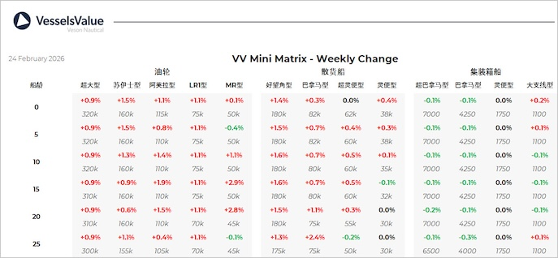

inWeekly Vessel Valuations Report25/02/2026

Bulkers:Bulker values have held largely steady this week, with modest gains seen in older Capesize and Panamax vessels.Sustained buyer appetite across segments continues to underpin a well-balanced sale and purchase market.
Capesize Cape Brazil (177,700 DWT, Oct 2010, SWS) sold by Stealth Maritime for USD 31 mil, VV Value USD 30.9 mil
Supramax Lumina (55,900 DWT, Mar 2015, Mitsui Ichihara) sold to Niovis Shipping for USD 22 mil, VV Value USD 21.7 mil
Handysize Asia Spirit (35,300 DWT, Apr 2012, Dongzhe) sold by Cetus Maritime for USD 11.5 mil, VV Value USD 11.8 mil
Tankers:VV Tanker values firmed again this week for mid age tonnage. Secondhand activity was slower this week and mainly dominated by the handy sector
Aframax P Sophia (105,100 DWT, Sep 2009, Hyundai HI Ulsan Shipyard) sold by Performance Shipping Inc for USD 36.65 mil, VV Value USD 35.72 mil
MR2 (Chemical/Product) Elandra Fjord & Elandra Baltic (52,300-52,600 DWT, 2012-2013, Guangzhou Shipyard International Company Limited) sold to Seven Islands Shipping for USD 46 mil en bloc, VV Value USD 48.44 mil
4 x MR1 (Chemical/Product) (38,700-39,000 DWT, 2015-2016, Hyundai Mipo) sold to Sokana for USD 124 mil en bloc, VV Value USD 124.56 mil
Containers:Values remain stable across the board this week. Minor increases in Feedermax resales and a slight drop in older Panamax values
No notable sales this week
